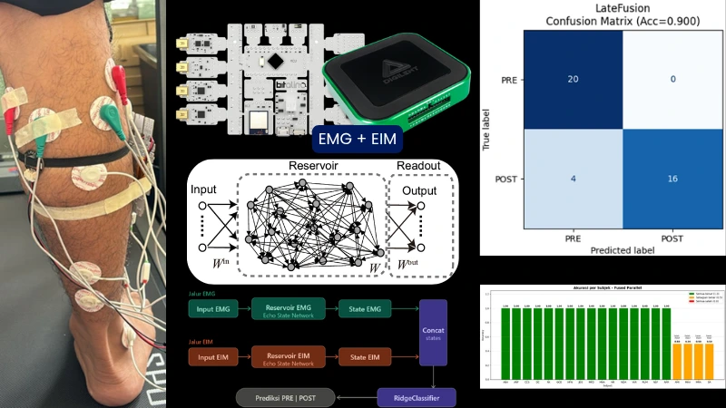
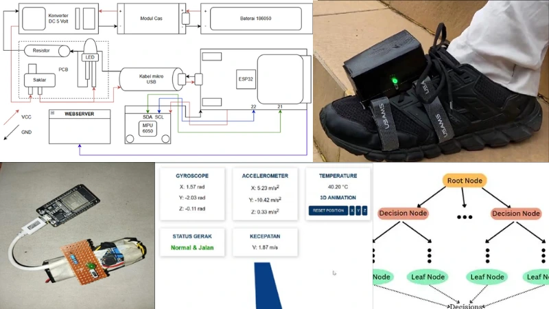
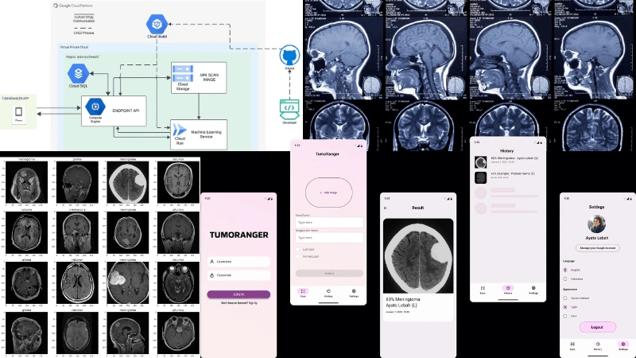
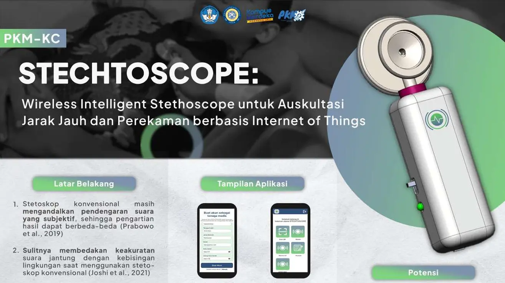
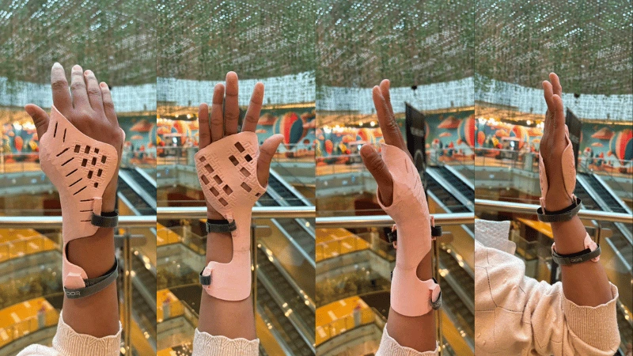
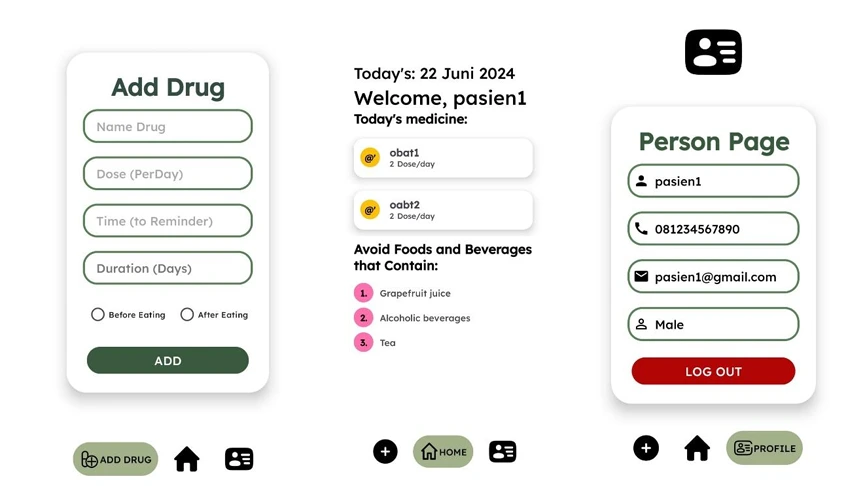
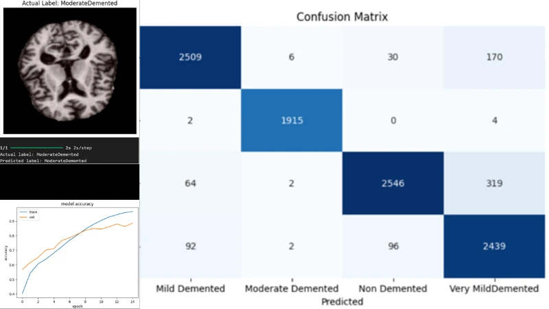
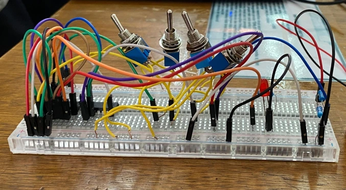
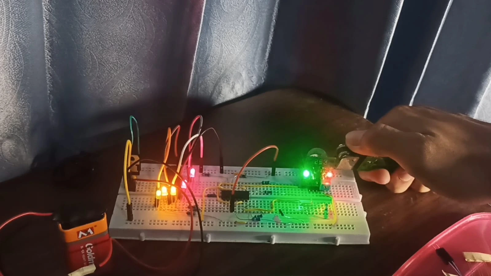
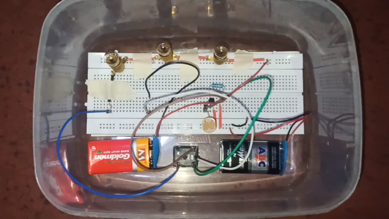

Biomedical Engineering
From sensors to intelligent systems.
Hello, I'm Raihan. I am a Biomedical Engineering graduate with a strong interest in Artificial Intelligence, biomedical signal processing, medical imaging, and smart medical devices. Throughout my academic journey, I have worked on projects ranging from EMG-based fatigue classification and AI-assisted stroke diagnosis to IoT-enabled healthcare devices and embedded systems. This portfolio showcases the projects, research, and experiences that reflect my passion for building technology that advances healthcare.
Featured work
04 selected projectsFused EMG–EIM Fatigue Classification via Reservoir Computing
Undergraduate thesis · solo research
A model that classifies calf muscle pump fatigue by fusing EMG and EIM biosignals through an Echo State Network. Built around a stair-climbing fatigue protocol across 20 subjects, aimed at flagging occupational workers at risk of chronic venous insufficiency before it becomes a clinical problem.

G-Track: Smart Shoe for Gait Analysis & Osteoarthritis Screening
Rancang bangun / hardware + firmware
A wearable built on an ESP32 and MPU6050 IMU that analyzes gait patterns and streams data to a web server in real time, with the goal of catching early signs of osteoarthritis before symptoms become obvious.

Brain Tumor Classification from MRI Scans
MSIB internship · ML team member
A four-class CNN classifier (normal, meningioma, no tumor, pituitary, glioma) built during an MSIB internship. My part was the model itself; the wider project stitched together ML, an Android front end, and cloud infrastructure into one working pipeline.

Wireless Digital Stethoscope + Companion App
PKM-funded · hardware + mobile
A conventional stethoscope head paired with an ESP32, mic, and amplifier in a 3D-printed housing, feeding into an Android app where captured audio can be reviewed. Firmware and app talk to each other through Firebase.

More projects
scroll →
Personalized Wrist Orthosis
A 3D-printed wrist splint adapted from an open-source base file, resized per patient for a proper individual fit. PLA printed on demand.

Medication Reminder App
Android app with login, medication tracking, and profile management, built to help patients stay on schedule with their prescriptions.

Alzheimer's MRI Classification
A CNN model for classifying Alzheimer's disease from brain MRI scans, built as a machine learning coursework project.

MUX-Based Electronic Safe
A digital logic project implementing an electronic safe security system using type-2 multiplexer circuits for access control.

Gas Leak Detection System
A gas detection system using an MQ metal-oxide (MOX) sensor to monitor hazardous gas concentrations.

Automatic Garden Light
A simple LDR + relay circuit that switches garden lighting on and off based on ambient light.
Promotional Website
Developed a promotional website for local MSMEs in Pilangrejo Village, Madiun, as part of a community service (KKN) program.
Skills
Embedded & Hardware
- ESP32 / microcontrollers
- MPU6050 & sensor integration
- 3D printing (PLA)
- Prototype fabrication
ML & Signal Processing
- Python
- CNN
- Reservoir Computing / ESN
- EMG / EIM biosignal processing
Mobile Development
- Java
- Android Studio
- Firebase
Electronics & Logic
- Digital logic design
- IC-based circuits
- Basic circuit prototyping